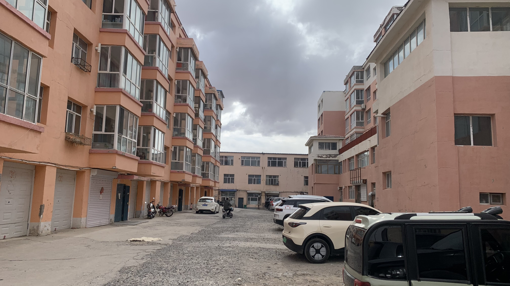
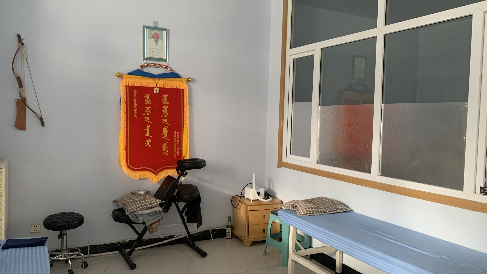
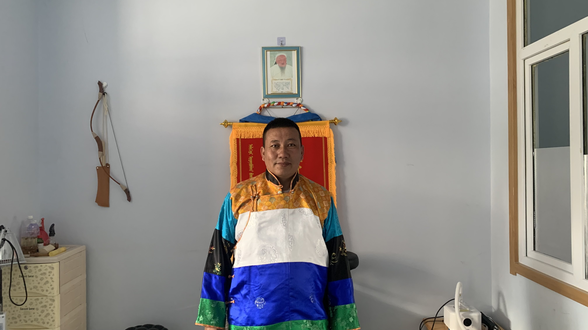

k-Day 056｜入會儀式
昨天休息了整整兩天，兩隻膝蓋仍然跟包子一樣。向遠處的黃老師求助，獲得了一些消腫的操作。但是明天必須出發，在這個地方無盡的燒錢實在絕望。
在詢問當地人後找到一間位於別力古台醫院旁的蒙醫推拿。

地址位於小區內，一開始找不到入口，走到大街上詢問超市老闆，老闆把我帶進小區裡敲門。

內裝跟傳統推拿類似，心中有點忐忑。師傅觀察了一下說膝蓋沒問題，就開始躺下治療。
以下紀錄手法與感受上的差異。
首先是手。全程幾乎是以手掌大面積按壓的方式進行。按壓這個詞可能不太精確，會讓人聯想到泰式按摩或者中醫推拿筋絡的點、線放鬆。實際上的體感更像是他在測試並重置身體張力。
順序從薦骨周遭與下腹開始，延伸到臀大肌、臀中肌與髂腰肌。師傅以手掌輕壓時會詢問熱感傳遞到哪裡，體感上很明顯地，大腿前內側的髂腰肌就被截斷了，並沒有傳遞到膝蓋或小腿。
以接受治療者的反饋來說，肌肉（或神經）能感受到明確的熱感傳遞，與物理治療的放射反應有明確差異。除了臀中肌與腳掌大拇指和食指中間的凹槽按壓了明確的酸痛點，以及大腿後側的某根筋外，其餘的部位都像是肌肉接受壓力後的血液和神經流動反應。
完成療程後，體感上是鬆軟的狀態，沒有壓背或者穴位的酸爽感，若要形容，類似於身體密集勞損處輕微洩壓後擴散到其餘部位的張力平衡狀態。
詢問師傅可否幫他拍個照，他立刻穿上正式的服裝，要求站在成吉思汗的肖像前拍攝。

師傅說他以前就住在牧區，他的奶奶就是做這個，因此很早就會：「這是大自然給我的」他以認真的語氣說著。
我接著詢問手法與熱感流動的原理，他用帶著濃重口音的中文和我說：「這不是我給你的，這是大自然給你的。」說完立刻被自己的幹話逗笑。
雖說是額外支出且費用也不便宜，既然膝蓋疼痛，剛好有機會感受不同的治療方式，就算是文化體驗吧。
今日花費： 蒙醫 200、午晚餐 70、住宿 70元